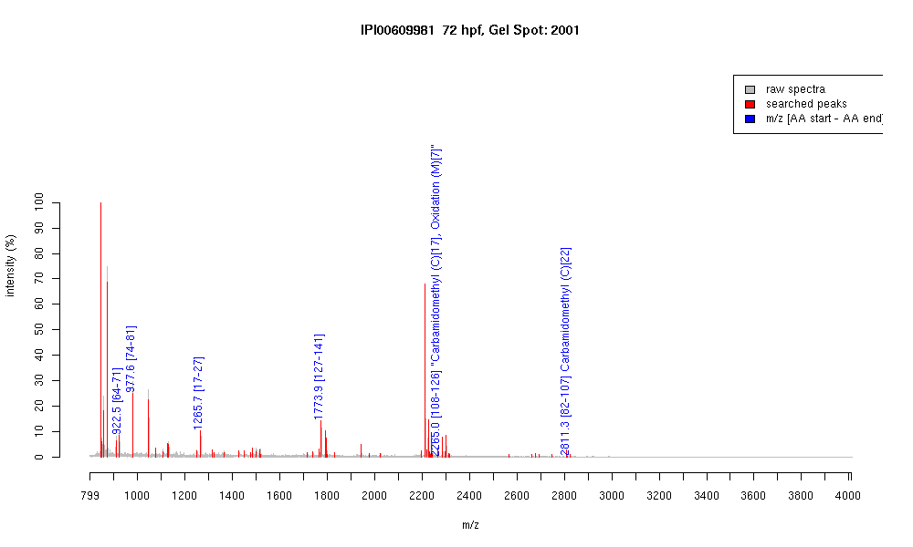

| Name | PREDICTED: similar to polymerase (RNA) II (DNA directed) polypeptide G isoform 1 |
|---|---|
| MW | 18894.7 |
| PI | 5.14 |
| Mascot Protein Score | 71 |
| Masses (matched / unmatched) | 6 / 68 |

| Peptide | MZ (calc) | MZ (observed) | Error (DA) | Error (PPM) | Start | Stop | Modifications |
|---|---|---|---|---|---|---|---|
| GFVLYPVK | 922.5396 | 922.5357 | -0.0039 | -4 | 64 | 71 | |
| AIVFRPFK | 977.593 | 977.5938 | 0.0008 | 1 | 74 | 81 | |
| YFGPNLLNTVK | 1265.6888 | 1265.6847 | -0.0041 | -3 | 17 | 27 | |
| TVDEDVVIQQDDEIR | 1773.8501 | 1773.8564 | 0.0063 | 4 | 127 | 141 | |
| HSIPSEMEFDPNSNPPCY | 2264.9587 | 2264.9827 | 0.024 | 11 | 108 | 126 | "Carbamidomethyl (C)[17], Oxidation (M)[7]" |
| GEVVDAVVTQVGLFTEIG | 2811.4055 | 2811.2942 | -0.1113 | -40 | 82 | 107 | Carbamidomethyl (C)[22] |